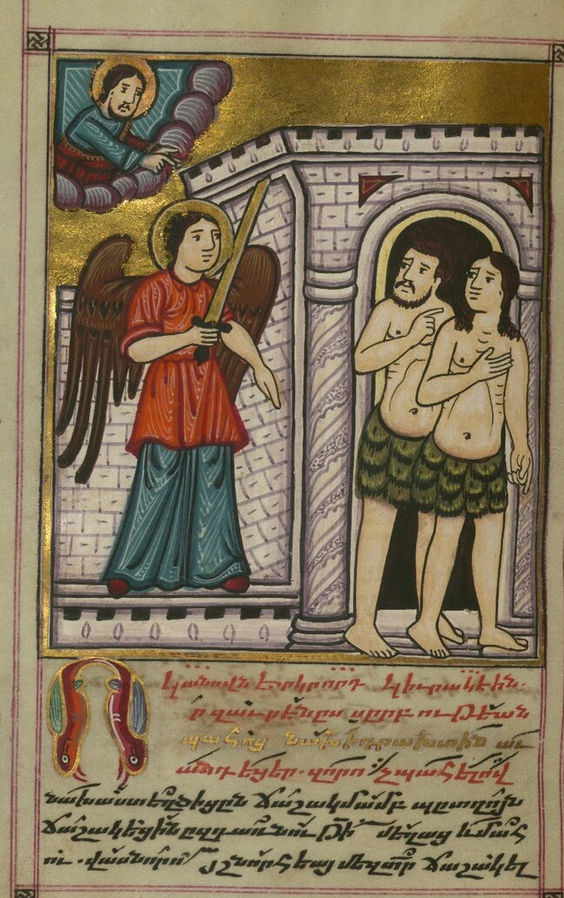
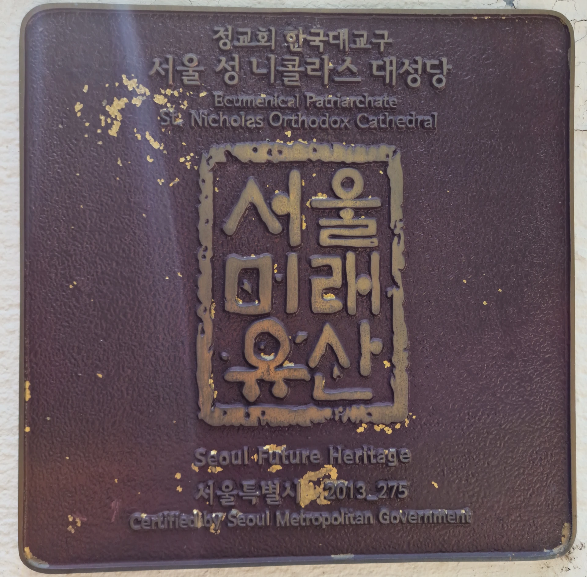
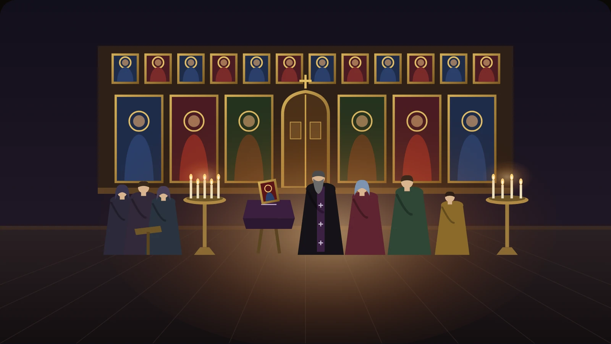
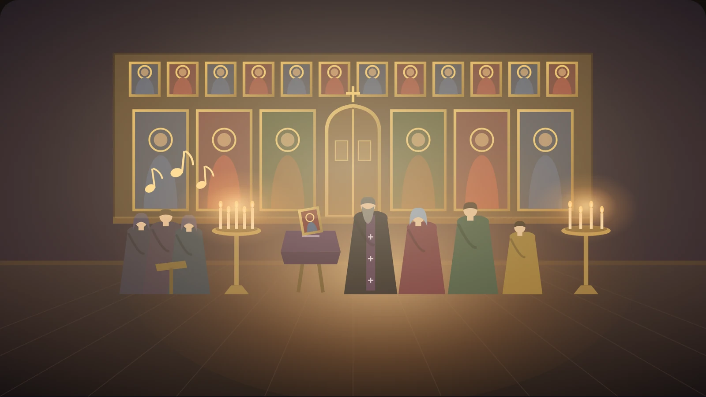

아직 펼치지 않은 카드
아직 펼치지 않은 카드
금식 전날의 잔치 · 3용서의 주일정교회의 긴 사순절이 시작되기 전날 저녁, 신자들은 한 사람씩 서로에게 무엇을 구할까요?서로에게 ‘용서해 줘’라고 말하는 날이 있대.
사순절 바로 앞 일요일 저녁정교회가 있는 여러 나라 · 서울 성 니콜라스 대성당
용서의 주일
정교회의 긴 사순절이 시작되기 전날 저녁, 신자들은 교회에 모여 한 사람씩 “용서해 주세요”를 주고받아요. 사제가 먼저 엎드려 용서를 구하고, 그동안 성가대는 부활절 노래를 불러요. 셋째 장면에서 그 저녁의 예식을 한 사람씩 무대에 놓아 보세요.
긴 금식을 시작하기 전날 저녁, 모두가 한 사람씩 “용서해 주세요” 하고 인사한대. 신부님이 맨 먼저 해!
검수 전 시안이에요(기준서 1판). 장면에는 정교회 기관과 교회 누리집, 『이집트의 마리아 전기』, 한국 정교회 주보에 있는 것만 옮겼어요. 예식의 모습은 교회마다 조금씩 달라서 그 점을 함께 적었어요. 무대 그림은 이 안내서가 그렸어요. 상상은 ‘눈 감고 상상해 보기’에만 썼어요.
시안 확인용카드 단계 미리 보기
1
낙원 문 앞의 아담
정교회는 사순절 바로 앞 일요일을 ‘용서의 주일’이라고 불러요. 정교회는 로마 가톨릭과 갈라진 뒤 러시아와 그리스, 동유럽을 중심으로 자라 온 그리스도교의 큰 갈래이고, 대사순절은 부활절을 앞두고 일곱 주 동안 기도하며 음식을 줄이는 때예요.
같은 날 아담이 낙원에서 쫓겨난 일도 기억해서, 교회 달력에는 ‘치즈 주일’(유제품을 먹는 마지막 일요일), ‘아담이 쫓겨난 날’로도 적혀 있어요.
이날 예배의 노래들은 낙원에서 쫓겨나 그 앞에 앉아 우는 아담을 노래해요. 아침 예배에서는 남의 잘못을 용서하라는 말씀과, 금식할 때 남에게 드러내지 말라는 말씀을 읽어요(마태복음 6장 14~21절).

이 그림은 1678년 콘스탄티노폴리스(지금의 이스탄불)에서 완성한 아르메니아 찬송집에 실린 ‘낙원에서 쫓겨남’이에요. 이 찬송집은 사순절 바로 앞 ‘참회 화요일의 노래’ 앞에 이 그림을 두었어요. 칼을 든 천사 앞에서 아담과 하와가 낙원의 문을 나서요.
아담과 하와가 낙원 문 밖으로 나가고 있어. 날개 달린 천사가 문을 지켜.
물어보기천사는 손에 무엇을 들고 있을까?
2
강을 건너기 전에
서로 용서를 구하고 사순절을 시작하는 모습은 옛 기록에도 나와요. 7세기 예루살렘 교회의 으뜸 주교였던 소프로니오스가 쓴 『이집트의 마리아 전기』에는, 요르단강 가까운 한 수도원의 사순절 모습이 나와요.
사순절이 시작될 때 수도자들은 성찬(빵과 포도주를 나누는 예식)을 받고 조금 먹은 뒤 다시 성당에 모였어요. 엎드려 기도하고, 서로 입 맞추며 용서를 구하고, 원장에게 앞으로 사막에서 홀로 치를 사순절을 위해 축복을 청했어요.

그다음 시편 27편을 부르며 문을 나섰어요. 주님이 나의 빛이고 구원이시니 두려울 것이 없다는 노래예요. 그리고 요르단강을 건너 사막으로 흩어졌어요. 수도원에는 한두 사람만 남았어요.
사막에서는 서로 말을 걸지 않고, 남이 어떻게 금식하는지 알려 하지 않았어요. 그리고 부활절 한 주 전, 종려 주일에 수도원으로 돌아왔어요.
수도자들은 강을 건너 사막으로 떠나기 전에, 서로 “용서해 줘” 하고 인사했대.
물어보기먼 길을 떠나기 전에, 너는 누구에게 인사하고 싶어?
3
용서의 저녁 예배
용서의 주일 저녁, 교회는 저녁 예배(만과)로 사순절을 열어요. 교회의 하루는 해 질 녘에 시작해서, 이 저녁 예배가 사순절의 첫 예배가 되거든요.
예배 앞부분에서 성직자들은 기쁜 날의 밝은 예배 옷(제의)을 입어요. 사순절을 알리는 큰 노래(시편 69편에서 따온 ‘큰 프로키메논’)가 끝나면, 성화 벽 가운데의 제단 문을 닫고 사순절의 어두운 옷으로 갈아입어요. 노래 가락도 사순절 가락으로 바뀌어요.
예배가 끝나면 용서의 예식이 시작돼요. 아래에서 하나씩 골라 무대에 놓아 보세요. 사제가 먼저, 그다음 한 사람씩 나와요.
내 삶에서, 먼저 “용서해 주세요”라고 말하고 싶은 자리는 어디인가요?
무대 그림: 이 안내서가 그린 저녁의 정교회 성당(실제 성당이 아니에요) · 예식의 차례는 아즈부카 베리와 오소독스위키를 바탕으로
교회마다 모습은 조금씩 달라요. 사람들이 사제에게 차례로 나아간 뒤 서로 용서를 구하는 곳도 있고, 이 무대처럼 사제와 용서를 주고받은 사람이 사제 옆에 나란히 서고, 다음 사람이 그 줄을 따라가며 한 사람 한 사람과 주고받는 곳도 있어요.
한 사람씩 앞으로 나와서 “용서해 주세요” 하고 절해. 신부님도 똑같이 절해!
물어보기“용서해 주세요”라는 말을 들으면, 너는 뭐라고 대답할래?
4
서울의 용서 주일
한국에서는 세계 총대주교청(이스탄불에 있는, 정교회 여러 교회 가운데 첫째 자리의 교회)에 속한 한국 정교회가 이 예배를 드려요. 한국 정교회 주보는 이날을 ‘용서 주일’, 이날 오후에 드리는 만과(저녁 예배)를 ‘참회의 만과’라고 적어요.
2026년 용서 주일 주보는 사랑과 용서로 사순절을 시작하자며 모두 함께하자고 알렸어요. 다음 날은 ‘정결 월요일’, 금식이 시작되는 사순절의 첫날이에요.


서울 마포구 아현동 언덕의 성 니콜라스 대성당은 1968년에 세운, 한국에서 처음 지은 비잔틴 양식(가운데 둥근 지붕으로 하늘의 빛을 모으는 양식) 성당이에요. 벽에는 ‘서울미래유산’ 표지가 붙어 있어요.
서울에도 이 예배를 드리는 성당이 있어. 문 위에 금빛 모자이크가 반짝여.
물어보기내일부터 새로 시작한다면, 오늘 누구에게 먼저 인사하고 싶어?
눈 감고 상상해 보기
촛불 몇 개만 남은 어스름한 성당에 향 냄새가 아직 남아 있어요. 앞에서 누군가 무릎을 꿇는 옷자락 소리가 나고, 낮은 목소리로 “용서해 주세요”가 오가요. 그 사이로 성가대의 부활절 노래가 작게, 아주 작게 흘러요.
눈을 감아 봐. 촛불이 깜빡, 노래가 조용조용. “용서해 줘.” “하느님도, 나도 용서해.”
나의 자리
새로 시작하기 전에, 내가 먼저 ‘용서해 주세요’라고 말하고 싶은 사람이 있나요?
먼저 ‘미안해’라고 말하고 싶은 친구가 있어?
마음에 닿는 한 줄을 고르거나 직접 써 보세요. 한 줄을 남기면 이 자리의 도장이 찍혀요. 이 기기에만 저장돼요.
더 깊이
이야기를 보다 궁금해질 만한 것들이에요. 답을 읽거나 짧은 영화로 보세요.

왜 ‘괜찮아’가 아니라 ‘하느님께서 용서하십니다’라고 답해요?

긴 금식을 시작하는데 왜 부활절 노래를 불러요?
뒷이야기
아직 펼치지 않은 이야기예요. 누르면 이야기가 펼쳐지고 색이 돌아와요. 더 알고 싶으면 근거를 따라가 보세요.
다 펼치면, 다음에 오실 때 새 이야기가 찾아와요.
오늘의 뒷이야기는 여기까지예요. 다음에 오시면 새 이야기가 기다리고 있어요.
펼친 뒷이야기 · 누르면 다시 볼 수 있어요
더 찾아보기
기록마다 다른 점
주고받는 말 교회와 언어마다 말이 조금씩 달라요. “하느님께서 용서하십니다. 저도 용서해 주세요”라고 답하기도 하고, “하느님께서 우리 둘을 용서하시기를” 하고 답하기도 해요.
줄을 서는 법 사람들이 사제에게 차례로 나아간 뒤 서로 용서를 구하는 곳도 있고, 사제 옆에 줄을 이어 서서 모두가 모두와 주고받는 곳도 있어요.
어두운 빛깔 사순절 제의를 검정이라고 적은 곳도 있고, 보라나 짙은 빨강이라고 적은 곳도 있어요.
어느 일요일에 『이집트의 마리아 전기』를 옮긴 글마다, 수도자들이 떠난 날을 ‘사순절이 시작될 때(용서의 주일)’라고도, ‘사순절 첫 주일’이라고도 적어요.
함께 읽는 말씀
말씀은 뜻만 옮기고, 본문은 대한성서공회 개역개정으로 이어 드려요.
마태복음 6장 14~21절 남의 잘못을 용서하면 하늘 아버지도 너희를 용서하신다는 말씀, 금식할 때 남에게 보이려 하지 말라는 말씀, 보물을 하늘에 쌓으라는 말씀이에요. 용서의 주일 아침에 읽어요.
창세기 3장 23~24절 하나님이 사람을 에덴동산에서 내보내시고, 그룹들과 두루 도는 불 칼로 생명나무의 길을 지키게 하셨어요.
로마서 13장 11~14절 밤이 깊고 낮이 가까웠으니 어둠의 일을 벗고 빛의 갑옷을 입자는 말씀이에요. 용서의 주일 아침에 함께 읽어요.
시편 27편 1절 주님이 나의 빛이고 구원이시니 누구를 두려워하겠느냐는 노래예요. 옛 수도자들이 사막으로 떠나며 불렀어요.
직접 가 보기
확인한 날 · 2026년 11월 18일 · 바뀌기 쉬운 정보라 정기적으로 다시 확인해요
서울 성 니콜라스 대성당(마포구 마포대로 18길 43)에서 용서 주일 오후에 참회의 만과를 드려요. 2027년 용서 주일은 3월 14일이에요(정교회 부활절 5월 2일로 계산).
예배 시간은 해마다 달라질 수 있어요. 가기 전에 한국 정교회 누리집에서 그 주의 주보를 확인해 주세요.
용서의 줄 금박
예식의 차례대로 다 놓으면 카드에 금박이 입혀져요.
사제 → 첫 사람 → 둘째 → 셋째 → 부활의 노래 차례로 놓기
내가 먼저 채색
둘 가운데 하나만 해도 카드가 채색돼요.
내가 먼저 용서를 구하고 싶은 자리 고르기
아이와 함께 ‘영화처럼 보기’를 끝까지 보기
근거 보기 (21)
- 정교회 타임스(Orthodox Times): 용서의 주일 — 아담이 낙원에서 쫓겨난 일과 용서, 두 가지 주제 · 이날 읽는 로마서 13장 11절~14장 4절, 마태복음 6장 14~21절
- 미국 정교회(OCA): 치즈 주일 ‘주님, 제가 부르짖사오니’ 찬송 악보(PDF) — 낙원에서 쫓겨난 아담이 그 앞에 앉아 우는 노래
- 미국 정교회(OCA): 슈메만 신부, 사순절의 시작 — 저녁 예배에서 사순절을 알림, 큰 프로키메논, 사순절 가락, 성 에프렘의 기도와 엎드림, 서로 용서를 구함, 그동안 성가대가 부활절 노래를 부름, 용서는 사순절의 시작이자 바탕
- 아즈부카 베리(Азбука веры): 용서의 주일 — 치즈 주일·아담의 쫓겨남, 저녁 예배 앞부분은 밝은 제의, 큰 프로키메논 뒤 제단 문을 닫고 사순절 제의로 갈아입음, 사제가 땅에 엎드려 먼저 용서를 청하는 말과 사람들의 대답, 모두가 서로 용서를 구함, 옛 수도원에서 부활절 노래를 부름, “하느님께서 용서하십니다”의 뜻
- 오소독스위키: Forgiveness Sunday — 저녁 예배를 마친 뒤 한 사람씩 이콘에 입 맞추고 사제 앞에 엎드려 “죄인인 저를 용서해 주세요”, 사제도 엎드려 “하느님께서 용서하십니다. 저도 용서해 주세요”, 성가대는 부활절 노래를 나직이, 사람들끼리도 용서를 구함
- 러시아 정교회 미국 교구(2018): 뉴욕 성 니콜라스 대성당 용서의 예식 — 큰 프로키메논 뒤 밝은 제의를 어두운 빛으로 바꿈
- 민스크 성 엘리사벳 수도원 블로그(2018): 용서의 주일 — 제대보를 사순절 보라로, 사제는 어두운 제의로
- 뉴 리터지컬 무브먼트(2018): 비잔틴 전례의 용서의 주일 — 밝은 제의와 제대보를 중간에 어두운 것으로 바꿈, 사제부터 모두가 서로에게, “하느님께서 우리 둘을 용서하시기를”, 곳마다 다름
- 더 비잔틴 라이프: 용서의 저녁 예배 — 사제와 용서를 주고받은 사람이 사제 옆에 서서 줄을 이어 가는 교회들
- 포덤 대학교 중세 자료집: 『이집트의 마리아 전기』(소프로니오스, 조던빌 성삼위 수도원 옮김) — 사순절이 시작될 때 성찬, 조금 먹고 다시 모임, 엎드려 기도하고 서로 입 맞추며 용서를 구함, 원장의 축복, 시편을 부르며 요르단강을 건너 흩어짐, 한두 사람만 남음, 서로 묻지 않음, 종려 주일에 돌아옴
- 미국 정교회(OCA): 사순절 다섯째 주일, 이집트의 성 마리아 — 사순절 첫 주일에 수도자들이 서로 용서를 구하고 사막으로 떠남, 조시마와 마리아
- 한국 정교회 주보 제2565호(2026년 2월 22일, PDF) — 용서 주일, “오늘 오후에 참회의 만과”, 사랑과 용서로 사순절을 시작하자, 다음 날 정결 월요일부터 사순절
- 서울신문(2007): 종교건축 이야기 — 성 니콜라스 서울대성당, 1968년 아현동 언덕에 세움, 한국에서 처음 세운 비잔틴 양식
- 세계 총대주교청 한국 정교회 대교구 성 니콜라스 대성당: 2026년 성주간 예배 안내(PDF) — 대교구 이름
- 오소독스위키: Vespers — 만과는 하루 예배의 첫 예배, 교회의 하루가 해 질 녘에 시작해서 이른 저녁에 드림
- 서울신문(2016년 6월 17일): 동방 정교회 시노드 기사 — 로마 가톨릭과 갈라진 뒤 동유럽과 러시아를 중심으로 발전, 그리스 정교회·러시아 정교회 등 지역 교회
- 브리태니커 백과사전: Bartholomew I — 이스탄불에서 뽑힌 콘스탄티노폴리스 대주교이자 세계 총대주교, 정교회 여러 교회 가운데 ‘같은 이들 중 첫째’
- 대러시아 백과사전: Великий пост(대사순절) — 동방에서는 일곱 주(여섯 주와 성주간), 앞의 치즈 주간
- e1.ru(2026년 10월 9일): 2027년 대사순절 안내 — 교회 전통에 따라 고기, 우유와 유제품, 달걀을 끊음, 생선도 대부분의 날에
- 뉴 리터지컬 무브먼트(2018)가 옮긴 슈메만 신부의 말 — 용서는 나와 ‘원수’ 사이에 하느님의 빛나는 용서를 놓는 일
- 월터스 미술관: W.547 찬송집 설명 — 54v쪽 ‘낙원에서 쫓겨남’은 참회 화요일 노래 앞의 그림, 동물 모양 첫 글자
그림·사진·소리 출처
- 그림: 월터스 미술관의 아르메니아 찬송집(W.547) · 퍼블릭 도메인 · 위키미디어 공용
- 사진: Bahnfrend · CC BY-SA 4.0 · 위키미디어 공용
- 사진: Gre regiment · CC BY-SA 4.0 · 위키미디어 공용
- 사진: Gre regiment · CC BY-SA 4.0 · 위키미디어 공용
- 그림: 월터스 미술관의 아르메니아 찬송집(W.547) · 퍼블릭 도메인 · 위키미디어 공용
- 이 안내서가 그린 그림 · 이 카드의 놓아 보기 무대(예식의 차례는 아즈부카 베리와 오소독스위키를 바탕으로)
- 이 안내서가 그린 그림 · 이 카드의 놓아 보기 무대(예식의 차례는 아즈부카 베리와 오소독스위키를 바탕으로)
- 이 안내서가 그린 그림 · 러시아 미술관의 글(버터 주간이라는 이름, 블리니에 버터를 듬뿍 씀)을 바탕으로
- 그림: 피터르 브뤼헐(아버지) · 퍼블릭 도메인 · 위키미디어 공용
- 사진: Poliphilo · 퍼블릭 도메인 · 위키미디어 공용
- 사진: Новинская Г. · CC BY-SA 4.0 · 위키미디어 공용
‘처음 만나는 기독교 문화’의 깊은 카드예요. 카드 단계와 남긴 글은 이 기기에만 저장돼요.